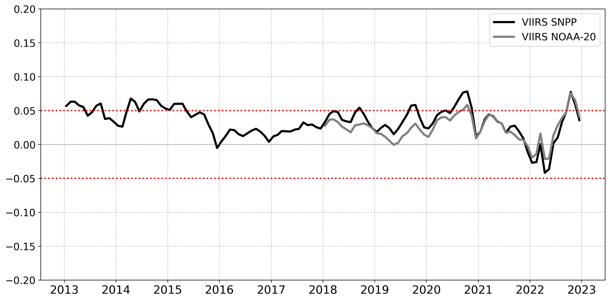
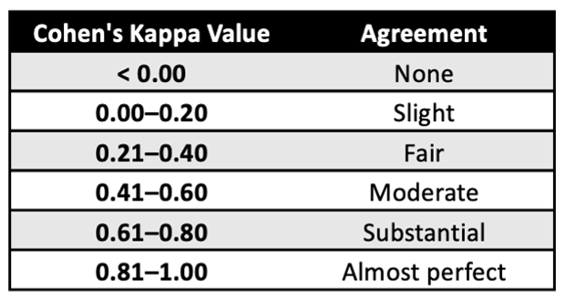
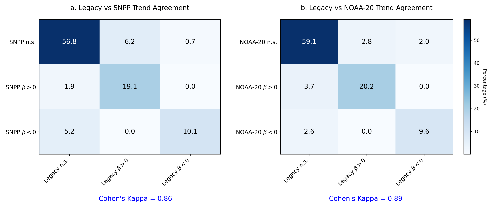

Statistical Analysis
To evaluate how the interim primary productivity products (VIIRS-SNPP and VIIRS-NOAA-20) differ from the legacy product (MODIS-Aqua), we conducted a comprehensive statistical analysis that includes the following methods:
- Calculating the Unbiased Relative Difference (ψ), which is a measure of how similar the interim and legacy products netPP values are.
- Comparing long-term trends in netPP, which evaluates if the two products track the same trends, or lack of trends, in the data over time.
For the VIIRS SNPP analysis we used a 10-year time period from January 2013 to December 2023. For the VIIRS NOAA-20 analysis we used a 5-year time period from January 2018 to December 2023.
Summary of Results
VIIRS SNPP and VIIRS NOAA-20 interim primary productivity products both have similar values as the legacy product. Multi-year analysis showed that the mean monthly difference between either interim product and the legacy product was no more that 7%. Spatially, differences between the interim and legacy products were typically less than 5% in open ocean regions, 5-10% in subtropical gyres, and greater than 20% at high latitudes and coastal upwelling zones.
Interim SNPP and NOAA-20 produce trend patterns that are consistent with the legacy product. Visually, the global trend maps display negative trends in subtropical gyres and major current systems, and positive trends in high latitude and coastal upwelling regions. Contingency analysis further supports the similarity in trend patterns, showing 86% agreement between SNPP and the legacy product, and over 88% agreement between NOAA-20 and the legacy product. Cohen’s Kappa values of 0.86 (SNPP) and 0.89 (NOAA-20) indicate almost perfect agreement in slope trend direction between the interim and legacy netPP products.
The relatively small differences between the interim products and the legacy product suggests that either interim would be a suitable replacement for the legacy product in many applications.
Unbiased Relative Difference (ψ)
In plain language, Unbiased Relative Difference (ψ) is the difference between interim and legacy primary productivity values (netPP), normalized to the mean of the two values. Normalizing to the mean avoids the bias of arbitrarily selecting one product as the reference. For a detailed explanation of the calculation, see the Appendix. This analysis allows us to determine how similar netPP values are between the interim and legacy products.
For our analysis, we calculated ψ for each pixel in our global grid for each month over a multi-year timespan. The resulting monthly maps of global ψ allowed us to generate a timeseries of mean global monthly ψ and a map of the multi-year mean ψ for each pixel in our global grid.
Figure 1. Conceptual workflow for calculating unbiased relative difference (ψ) between interim and legacy satellite-derived net primary productivity (netPP) products. The yellow layers represent monthly netPP data from the Interim and Legacy datasets. Matching pixels are connected by the red lines. Monthly ψ maps are calculated for each time step, forming the blue layers. A time series of ψ is extracted from the blue stack, and a multi-year average is computed (green layer).
Temporal Variability
For the VIIRS SNPP interim product relative to the legacy product, monthly mean global ψ values are positive over most of the 10-year timeseries, indicating that the interim netPP values are on average greater than the legacy values. The values for the interim product were quite similar to the legacy values, as indicated by ψ values ranging from 0 to 0.07 (0-7% difference from the legacy product) over the entire timeseries.
For the VIIRS NOAA-20 interim product, monthly mean global ψ values were also positive over most of the 5-year timeseries and within a range of 0 to 0.07 (0-7% difference from the legacy product). These values were slightly lower than those observed for SNPP over its respective time period, but similarly indicate that the interim netPP estimates were generally higher than those from the legacy product.
Timeseries: Monthly Means of Unbiased Relative Difference
 Figure 2. The timeseries of mean global ψ values for each month from January 2013 to December 2022 (a ten-year period).
Spatial Variability
The 10-year average map (Figure 3a) reveals the spatial variable in ψ, with most oceanic regions showing <5% difference (lightest blue and pink) between the two netPP products. However, in the tropical and subtropical gyres there is a 5-10% difference between SNPP and the legacy product (medium blue) and areas of higher differences (>20%) are visible at high latitudes and in coast upwelling regions.
The 5-year average map (Figure 3b) shows similar spatial patterns in ψ that are consistent with those observed for SNPP. Most open ocean regions show <5% difference between NOAA-20 and legacy netPP products. Moderate differences (5-10%) are apparent in the subtropical gyres and larger differences (>20%) are observed at higher latitudes in both hemispheres and along coastal upwelling regions. Compared to SNPP, the NOAA-20 map contains slightly larger areas of difference.
Unbiased Relative Difference
 Figure 3. Global maps of the multi-year mean unbiased relative difference (ψ) comparing VIIRS-SNPP(a) and VIIRS-NOAA(b) with MODIS-Aqua. Positive (blue) values indicate that the interim product netPP values are larger than those of the legacy product and negative (red) values indicate that the interim product netPP values are less than those of the legacy product.
Figure 3. Global maps of the multi-year mean unbiased relative difference (ψ) comparing VIIRS-SNPP(a) and VIIRS-NOAA(b) with MODIS-Aqua. Positive (blue) values indicate that the interim product netPP values are larger than those of the legacy product and negative (red) values indicate that the interim product netPP values are less than those of the legacy product.
Trends Analysis
Temporal trends were calculated globally for the interim and legacy primary productivity products using linear regression methods. For our analysis, we determined the slopes of netPP versus time for each pixel in our global grid over a multi-year timespan using monthly netPP data. Results for the interim and legacy products were compared to identify how well the two products agree on the presence or absence of long-term trends. The purpose of this analysis was to identify how well the interim and legacy primary productivity timeseries agree using an arbitrarily chosen trend analysis method, not to accurately identify environmentally relevant trends in the ocean. We also applied statistical methods Contingency Matrices and Cohen’s Kappa to evaluate the strength of agreement. For a detailed explanation of the calculations, see the Appendix.
Figure 4. Conceptual workflow illustrating how trends in netPP are calculated using linear regression. Monthly netPP maps from January 2013 to December 2022 (yellow layers) are used to estimate the slope (β) at each pixel across time. The slope values are compiled into a spatial map (blue layer) representing trend in productivity over the timeseries.
Visually, the global maps of slopes show very similar trend patterns, indicating that the interim and legacy products yield similar trends (Figure 5). The SNPP (a) and legacy (b) maps both show negative trends (red) in subtropical gyres and major current systems, and positive trends (blue) are shown in higher latitudes and coastal upwelling zones. Relative to the legacy product, the SNPP map displays more positive trends in coastal regions.
The NOAA-20 (c) and legacy (d) maps also show similar large-scale patterns, with negative trends across much of the subtropical gyres and open ocean, and positive trends concentrated in polar and coastal upwelling regions. Compared to the legacy product, the NOAA-20 map exhibits slightly stronger trend magnitudes, particularly in the coastal and high-latitude zones.
Multi-Year Trend Maps

Figure 5. Linear trends in monthly primary productivity from (a) interim VIIRS SNPP and (b) legacy products for the years 2013-2022. Linear trends in monthly primary productivity from (c) interim VIIRS NOAA-20 and (d) legacy products for the years 2018-2022. Positive values (blue) indicate increasing trends in netPP, while negative values (red) indicate decreasing trends.
Contingency Matrices and Cohen’s Kappa
To obtain more quantitative results from the trends analysis, we built contingency matrices using the slope data. Contingency analysis is an approach used to test whether or not there is an association between categorical variables. We treated the slopes from the trend analysis as categorical variables by recording whether the slope had a statistically significant positive value (β > 0), a statistically negative value (β < 0), or if the slope was not significantly different from zero (n.s.). This categorization was done for each pixel in the global maps of slopes for both the interim and legacy products. Therefore, for each pixel location there were nine possible slope combinations (Figure 6). The cells on the downward-sloping diagonal (from left to right) are the combinations where the interim and legacy products agree.
Figure 6. Contingency matrix of all possible combinations of pixel location trends and significance outcomes between the interim and legacy netPP products. Each cell describes one of nine possible category pairings based on whether a pixel exhibited no significant trends (n.s.), a significant positive trend (β > 0), or a significant negative trend (β < 0) in each dataset. Columns represent trend categories from the legacy product; rows represent trend categories from the interim product.
For our analysis comparing the interim product to the legacy product, the percent of the total pixels that fell into each of the nine combinations was tallied and placed in the corresponding cell in the matrix. Tallying the values on the downward-sloping diagonal yielded the percentage of pixels where the slope trends were in agreement. In addition, we use Cohen’s Kappa as a statistical measure to quantify reliability of the agreement between the two products, accounting for the possibility that they could agree by chance. Cohen’s Kappa values range from < 0 (no agreement) to 1 (perfect agreement); Cohen’s Kappa was interpreted using a standard scale Viera and Garrett 2005. Qualitative categories for Cohen’s Kappa values are listed in Table 1.
Table 1. Scale for Cohen’s Kappa coefficient values, indicating the level of agreement between two categorical classifications. The scale ranges from < 0 (no agreement) to 1.00 (perfect agreement), with descriptive categories assigned to each interval. 
Tallying the values on the downward-sloping diagonal contingency matrix yield that co-occurrence slope trends shows 86% agreement between the SNPP interim and legacy products (Figure 7a) and over 88% agreement between the NOAA-20 interim and legacy products (Figure 7b). The Cohen’s Kappa values of 0.86 for the SNPP interim to legacy comparison and 0.89 for the NOAA-20 interim to legacy comparison, translated qualitatively to almost perfect agreement.
Contingency Matrices for Interim and Legacy Products 
Figure 7. Contingency table and Cohen’s Kappa statistic comparing (a) the VIIRS SNPP and the legacy products and (b) the VIIRS NOAA-20 and the legacy products.
Download Statistical Analysis Data Products
Access datasets used in the statistical analysis, including unbiased and biased relative differences, correlations, trends, and contingency matrices.
References
Appendix
The following sections provide detailed explanations of how the statistical analyses between the legacy and interim products were calculated. If you are interested in exploring or replicating these analyses yoursel, check out our Code Gallery for step-by-step tutorials.
Unbiased Relative Difference (ψ)
The pixel-by-pixel unbiased relative difference (ψnetPP) was computed for the globe for each month at 9km resolution across two datasets.
The unbiased relative difference (ψnetPP) is calculated for each pixel as follows:
\(ψ^{netPP} = \frac{netPP_{VIIRS} - netPP_{MODIS}}{\left(\frac{netPP_{VIIRS} + netPP_{MODIS}}{2}\right)}\)
Where:
- The difference between VIIRS-based netPP (netPPVIIRS) and MODIS-based netPP (netPPMODIS) values for that pixel is divided by the mean of netPPVIIRS and netPPMODIS.
This metric allows for sensor-to-sensor consistency assessment, ensuring that variations are not biased by absolute magnitude differences.
Trends Analysis
The purpose of calculating linear regression trends for each of the products is to evaluate how much the products agree in temporal patterns. Linear trends were calculated in the time series of monthly primary productivity for every pixel with anomalies for the MODIS-Aqua, VIIRS-SNPP, and VIIRS-NOAA-20 datasets. Calculating trends with anomalies enables us to focus on trends by removing seasonality. P-values were calculated to test the statistical significance of the trends for each pixel.
The trend analysis follows methods outlined in Melin et al. 2017, see the section 2.3 “Trend estimates and comparison of trends”.
Contingency Matrix and Cohen’s Kappa
To quantitatively assess agreement in trend classifications between the legacy and the interim netPP products, we use a contingency matrix and compute Cohen’s Kappa.
A contingency matrix compares the direction of linear trends between the legacy and interim netPP products at each pixel. Each trend is classified into one of three categories:
- Positive trend: statistically significant increasing trend
- Negative trend: statistically significant decreasing trend
- No significant trend: slope not significantly different from zero (e.g., p > 0.05)
We then count how often each combination occurs across all pixels to build a 3×3 matrix:
| VIIRS Positive | VIIRS Negative | VIIRS No Trend | |
|---|---|---|---|
| MODIS Positive | a | b | c |
| MODIS Negative | d | e | f |
| MODIS No Trend | g | h | i |
- Diagonal cells (a, e, i) indicate agreement.
- Off-diagonal cells indicate disagreement.
Cohen’s Kappa: Measuring Agreement Beyond Chance
Cohen’s Kappa (κ) quantifies how much the agreement between the legacy and interim products exceeds what would be expected by chance. It ranges from:
- 1 = perfect agreement
- <0 = no better than random
\(\kappa = \frac{P_o - P_e}{1 - P_e}\)
Where:
- ( P_o ) = observed agreement (proportion of pixels where legacy and interim agree):
\[ P_o = \frac{a + e + i}{N} \]
- ( P_e ) = expected agreement by chance:
\[ P_e = \frac{(a + b + c)(a + d + g) + (d + e + f)(b + e + h) + (g + h + i)(c + f + i)}{N^2} \]
- ( N ) = total number of valid pixels (sum of all cells):
\[ N = a + b + c + d + e + f + g + h + i \]


{kind=link}
{kind=link}
{kind=link}
{kind=link}
{kind=link}
{kind=link}